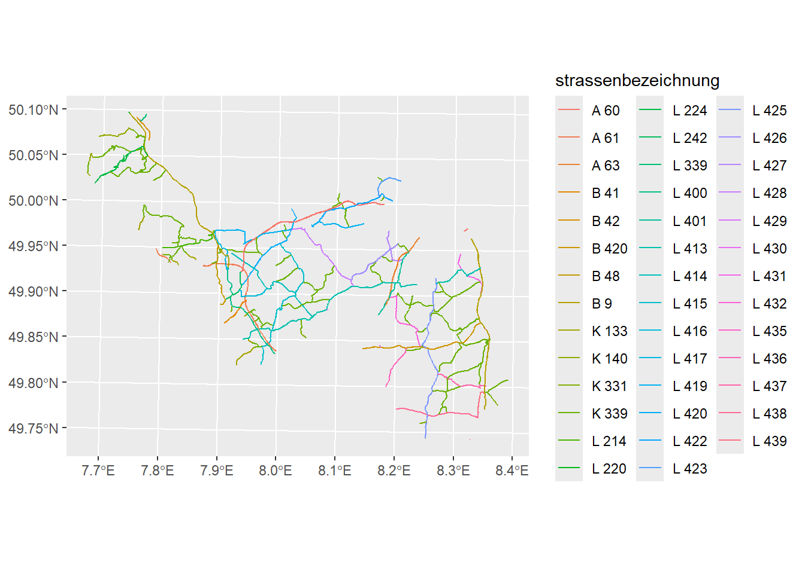
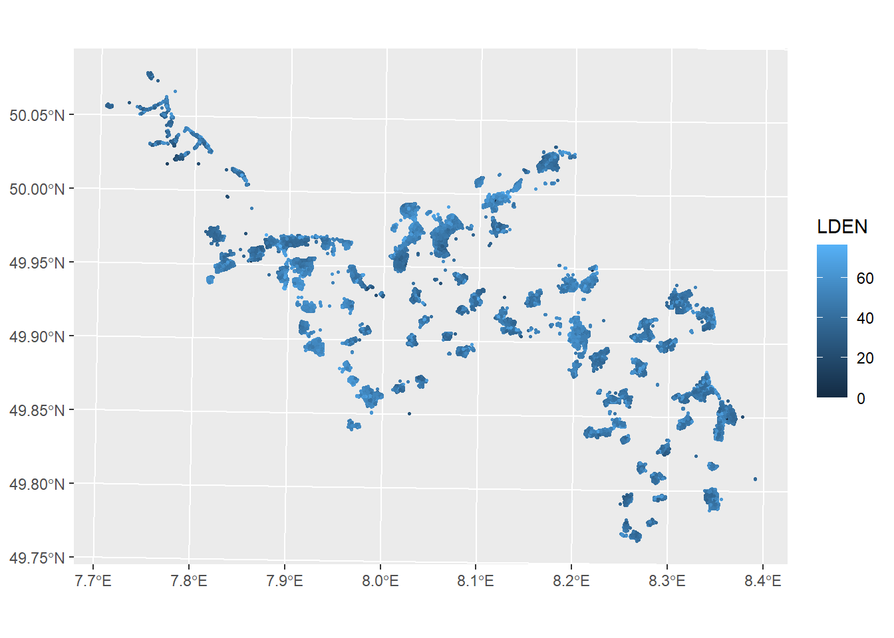
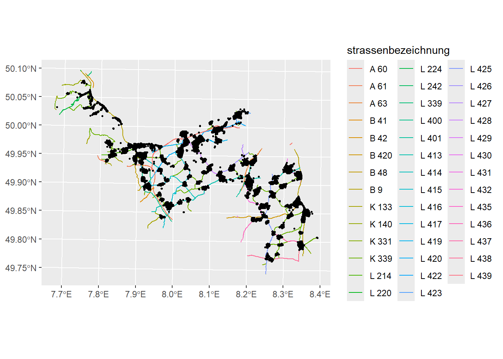
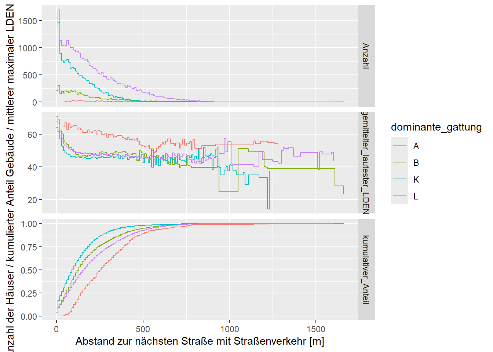
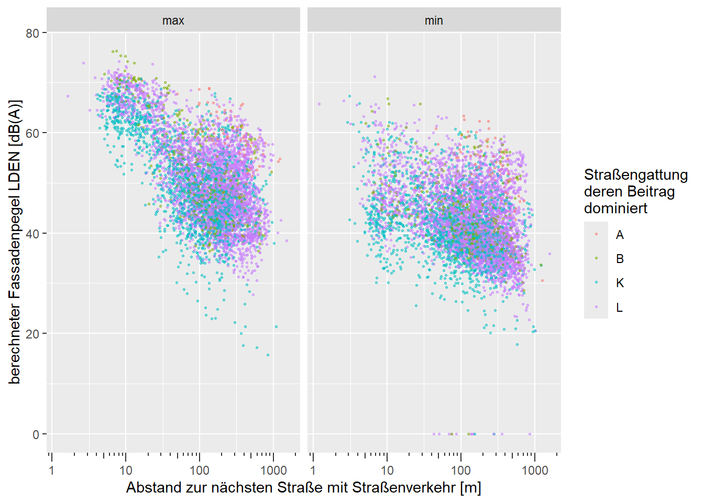
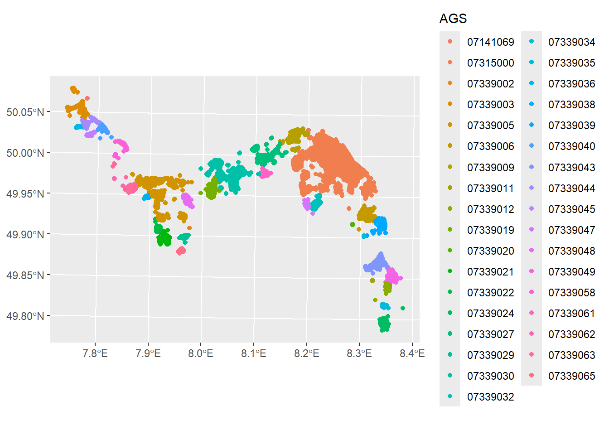

daten_ordner_pfad <-
"N:/4all.i4/I4.9 - Umweltbezogene Krankheitslast/04 - Daten/Lärm/Mainz-Bingen/"
# das hier ist vermutlich von Tim: "D:/Mainz-Bingen/"
ausgabepfad_strabst <-
paste0(daten_ordner_pfad, "Fassadenpunkte_mit_allen_Abstaenden.gpkg")
eingabepfad_strassennetz <-
paste0(daten_ordner_pfad,
"Strassennetz_LK22.gpkg")
eingabepfad_fasp_2024 <-
paste0(daten_ordner_pfad,
"Fassadenpunkte.shp")
eingabepfad_fasp_2025 <- "../Fassadenpunkte_EBA.gpkg"Prozessiere Fassadenpunkte des LfU RP zur Verwendung durch die GHS
Vorbemerkung Dateipfade
Da dieses Projekt von verschiedenen Menschen auf verschiedenen Computersystemen verwendet wird, sind hier alle im Projekt verwendeten Pfade versammelt, sodass sie ggf. leicht angepasst werden können:
Hoffnungen und Ziele
Das LfU hat im Dezember 2025 Dateien geschickt, die für die weitere Analyse der Umgebungslärmkartierung Mainz-Bingen wichtig sind. Damals hatte ich die folgende Hoffnungen:
- Dass die Fassadenpunkte mit Straßenlärm (Datei Fassadenpunkte.shp) jetzt vollständig sind, d.h. inklusive aller Fassadenpunkte, die keinen berechneten Straßen-Lärm haben. Meine Hoffnung: damit sollte die bislang nicht zuordenbare Teilnehmeradressen geolokalsiert sein. (Ich glaube es ging um ca. 8 %)-> Das war eine Fehlannahme, diese Datei wurde nicht verändert.
- Das Straßenverkehrsmodell (“Strassennetz_LK22.gpkg”) für Mz-Bin (wichtig, um festzustellen, wie realistisch die berechneten Pegel sind; um Expositions-Misklassifikationen zu detektieren). -> Analysiere ich weiter unten. Lageinformation ist da, aber die Analyse deckt Probleme für den weiteren Verlauf aus.
- Die EBA-Fassadenpunkte für Mz-Bin und Mz: D.h. erstmals haben wir auch den vollständigen Expositions-Datensatz auch für Schienenlärm. -> Das ist einerseits korrekt, andererseit fehlen darin die Adressdaten.
Im Folgenden die etwas tiefergehende Analyse dieser Dateien.
Straßennetz Umgebungslärmkartierung Mainz-Bingen
Die Datei N:/4all.i4/I4.9 - Umweltbezogene Krankheitslast/04 - Daten/Lärm/Mainz-Bingen/Strassennetz_LK22.gpkg wurde im Dezember 2025 gesendet von Nathalie Paris, LfU. Die Datei wird hier in R untersucht. Die Datei sollte alle mit Straßenverkehr belegten Straßen aus dem für die Umgebungslärmkartierung verwendeten Straßenverkehrsmodell beinhalten. Sie besteht aus einem Geopackage mit folgenden Layern:
st_layers(eingabepfad_strassennetz)Driver: GPKG
Available layers:
layer_name geometry_type features fields
1 strassennetz_lk22 3D Measured Multi Line String 2397 3
crs_name
1 ETRS89 / UTM zone 32NDer Layer strassennetz_lk22 enthält die Straßengeometrien:
Reading layer `strassennetz_lk22' from data source
`N:\4all.i4\I4.9 - Umweltbezogene Krankheitslast\04 - Daten\Lärm\Mainz-Bingen\Strassennetz_LK22.gpkg'
using driver `GPKG'
Simple feature collection with 2397 features and 3 fields
Geometry type: MULTILINESTRING
Dimension: XYZM
Bounding box: xmin: 404992.6 ymin: 5510201 xmax: 456229.6 ymax: 5550223
z_range: zmin: 0 zmax: 0
m_range: mmin: 0 mmax: 10382
Projected CRS: ETRS89 / UTM zone 32N OBJECTID STRASSE Shape_Leng
Min. :20418 Length:2397 Min. : 0.9951
1st Qu.:30287 Class :character 1st Qu.: 94.7105
Median :31414 Mode :character Median : 248.9345
Mean :32542 Mean : 489.8962
3rd Qu.:35731 3rd Qu.: 587.4921
Max. :59795 Max. :9615.3664
geom str_art
MULTILINESTRING ZM:2397 Length:2397
epsg:25832 : 0 Class :character
+proj=utm ... : 0 Mode :character
und sieht so aus:
plStrNetz22<-strNetz22 %>% # extrahiere die ersten 5 Zeichen des Straßennamens
mutate(strassenbezeichnung=str_sub(STRASSE,end=5)) %>%
ggplot()+
geom_sf( # precise that it will be a spatial geometry
aes( # provide some aesthetics
geometry = geom,
color=strassenbezeichnung))
plStrNetz22
Fassadenpunkte exportiert 2024
Die Datei N:/4all.i4/I4.9 - Umweltbezogene Krankheitslast/04 - Daten/Lärm/Mainz-Bingen/Fassadenpunkte.shp wurde schon im Dezember 2024 gesendet von Nathalie Paris, LfU. Sie besteht aus einer Shapedatei mit folgenden Layern:
st_layers(eingabepfad_fasp_2024)Driver: ESRI Shapefile
Available layers:
layer_name geometry_type features fields crs_name
1 Fassadenpunkte 3D Measured Point 539444 10 ETRS89 / UTM zone 32N (N-E)Der Layer Fassadenpunkte enthält die Straßengeometrien:
Reading layer `Fassadenpunkte' from data source
`N:\4all.i4\I4.9 - Umweltbezogene Krankheitslast\04 - Daten\Lärm\Mainz-Bingen\Fassadenpunkte.shp'
using driver `ESRI Shapefile'
Simple feature collection with 539444 features and 10 fields
Geometry type: POINT
Dimension: XYZM
Bounding box: xmin: 405388.1 ymin: 5512843 xmax: 456250.3 ymax: 5548200
z_range: zmin: 78.72193 zmax: 451.6978
m_range: mmin: 0 mmax: 0
Projected CRS: ETRS89 / UTM zone 32N (N-E) NR_ STOCKWERK NAME NUTZUNG
Min. :-1.660e+09 Min. :1 Length:539444 Length:539444
1st Qu.:-7.530e+08 1st Qu.:1 Class :character Class :character
Median :-4.139e+08 Median :1 Mode :character Mode :character
Mean :-4.820e+08 Mean :1
3rd Qu.:-1.590e+08 3rd Qu.:1
Max. : 1.103e+07 Max. :1
RICHTUNG LDEN LN str_name
Length:539444 Min. : 0.00 Min. : 0.00 Length:539444
Class :character 1st Qu.:40.60 1st Qu.:31.80 Class :character
Mode :character Median :46.00 Median :37.50 Mode :character
Mean :47.08 Mean :38.46
3rd Qu.:52.90 3rd Qu.:44.80
Max. :76.40 Max. :67.90
hausnr_ Einwohner geometry
Length:539444 Length:539444 POINT ZM :539444
Class :character Class :character epsg:25832 : 0
Mode :character Mode :character +proj=utm ...: 0
und sieht so aus:
plot_anteil<-0.1
fassadenpunkte_strasse24 %>%
slice_sample(prop = plot_anteil) %>%
ggplot() +
geom_sf(aes(geometry = geometry, color = LDEN),size=0.5)
Hier kombinieren wir die Fassadenpunkte mit dem Straßennetz:
plStrNetz22 +
geom_sf(
data = fassadenpunkte_strasse24 %>%
slice_sample(prop = plot_anteil),
aes(geometry = geometry),
size=0.5,
inherit.aes = FALSE
)
Die Straßen haben verschiedene Baulastträger bzw. Bezeichnungen:
strNetz22<-
strNetz22 %>%
mutate(str_art=str_sub(STRASSE,1,1))# das hier extrahiert einfach den ersten Buchstaben: also A, B, K oder L
strNetz22$str_art %>%
unique()[1] "B" "K" "L" "A"Zusammenhang Abstand und Pegel
Es könnte sein, dass Fassadenpunkte nahe an nicht kartierten Straßen liegen, die faktisch deren Immissionspegel dominieren - somit würden die Pegel im vorliegenden Modell unterschätzt. Um das untersuchen zu können, wird hier der Abstand der Fassadenpunkte zur nächsten Straße im Straßennetz berechnet. Die Ergebnisse werden dann zu den Fassadenpunkten hinzugefügt und wieder als Shapedatei N:/4all.i4/I4.9 - Umweltbezogene Krankheitslast/04 - Daten/Lärm/Mainz-Bingen/Fassadenpunkte_mit_allen_Abstaenden.gpkg abgespeichert.
# recht Rechenaufwändiger Schritt (ca. 15 min)
# zum Probieren kann hier ein kleinerer Anteil der Fassadenpunkte verwendet werden
verwendeter_anteil<-1 # muss 1 sein, wenn alles verwendet wird; zum Spielen ginge z.B. 0.01
# Alte Dateien löschen für sauberen Neustart
if (file.exists(ausgabepfad_strabst)) {
base_path <- tools::file_path_sans_ext(ausgabepfad_strabst)
# Lösche alle Endungen (.shp, .shx, .dbf, .prj etc.)
files_to_delete <- list.files(dirname(ausgabepfad_strabst),
pattern = paste0(basename(base_path), ".*"),
full.names = TRUE)
unlink(files_to_delete)
message("Alte Ausgabedateien gelöscht.")
}Alte Ausgabedateien gelöscht.message("---- START: Datenvorbereitung ----")---- START: Datenvorbereitung ----# 1. Fassadenpunkte vorbereiten (Geometrie reparieren + Z-Werte entfernen)
# Das verhindert GEOS-Fehler
fassadenpunkte_erweitert <- fassadenpunkte_strasse24 %>%
slice_sample(prop=verwendeter_anteil) %>%
st_zm(drop = TRUE, what = "ZM") %>%
st_make_valid()
message(paste("Anzahl Fassadenpunkte:", nrow(fassadenpunkte_erweitert)))Anzahl Fassadenpunkte: 539444# Straßentypen
strassentypen <- c("A", "L", "B", "K")
# 2. Schleife über Straßentypen
for (typ in strassentypen) {
message(paste0("\n---- Verarbeite Straßentyp: ", typ, " ----"))
# Straßen filtern & reparieren
str_subset <- strNetz22 %>%
filter(str_art == typ) %>%
st_zm(drop = TRUE, what = "ZM") %>%
st_make_valid()
# Initialisiere Spalte mit NA
col_name <- paste0("dist_", typ)
fassadenpunkte_erweitert[[col_name]] <- NA_real_
if (nrow(str_subset) > 0) {
message(paste("Straßen gefunden:", nrow(str_subset), "- Starte Berechnung..."))
# --- BATCH PROCESSING ---
# Wir machen kleine Häppchen à 1000 Punkte.
# Das erlaubt uns, Fortschritt zu sehen und schont den RAM.
chunk_size <- 1000
n_points <- nrow(fassadenpunkte_erweitert)
indices <- seq(1, n_points)
chunks <- split(indices, ceiling(indices/chunk_size))
total_chunks <- length(chunks)
for (i in seq_along(chunks)) {
idx <- chunks[[i]] # Die Zeilennummern für diesen Durchlauf
# Nur alle 5 Chunks (oder beim ersten) eine Meldung drucken, um das Log nicht zu fluten
if (i == 1 || i %% 5 == 0) {
message(paste0(" -> Typ ", typ, ": Verarbeite Batch ", i, " von ", total_chunks,
" (Punkte ", min(idx), " bis ", max(idx), ")"))
}
# 1. Subset der Punkte
pts_chunk <- fassadenpunkte_erweitert[idx, ]
# 2. Nächsten Index finden (Das ist der rechenintensive Teil)
# Wir nutzen try(), falls eine Geometrie crasht, bricht nicht alles ab
nearest_idx <- try(st_nearest_feature(pts_chunk, str_subset), silent = TRUE)
if (!inherits(nearest_idx, "try-error")) {
# 3. Geometrie der gefundenen Straßen holen
nearest_geoms <- st_geometry(str_subset)[nearest_idx]
# 4. Exakte Distanz berechnen (element-wise)
dists <- st_distance(pts_chunk, nearest_geoms, by_element = TRUE)
# Speichern
fassadenpunkte_erweitert[[col_name]][idx] <- as.numeric(dists)
} else {
message(paste(" ACHTUNG: Fehler bei Batch", i))
}
}
message(paste("---- Fertig mit Typ", typ, "----"))
} else {
message(paste("Keine Straßen vom Typ", typ, "gefunden."))
}
}
---- Verarbeite Straßentyp: A ----Straßen gefunden: 91 - Starte Berechnung... -> Typ A: Verarbeite Batch 1 von 540 (Punkte 1 bis 1000) -> Typ A: Verarbeite Batch 5 von 540 (Punkte 4001 bis 5000) -> Typ A: Verarbeite Batch 10 von 540 (Punkte 9001 bis 10000) -> Typ A: Verarbeite Batch 15 von 540 (Punkte 14001 bis 15000) -> Typ A: Verarbeite Batch 20 von 540 (Punkte 19001 bis 20000) -> Typ A: Verarbeite Batch 25 von 540 (Punkte 24001 bis 25000) -> Typ A: Verarbeite Batch 30 von 540 (Punkte 29001 bis 30000) -> Typ A: Verarbeite Batch 35 von 540 (Punkte 34001 bis 35000) -> Typ A: Verarbeite Batch 40 von 540 (Punkte 39001 bis 40000) -> Typ A: Verarbeite Batch 45 von 540 (Punkte 44001 bis 45000) -> Typ A: Verarbeite Batch 50 von 540 (Punkte 49001 bis 50000) -> Typ A: Verarbeite Batch 55 von 540 (Punkte 54001 bis 55000) -> Typ A: Verarbeite Batch 60 von 540 (Punkte 59001 bis 60000) -> Typ A: Verarbeite Batch 65 von 540 (Punkte 64001 bis 65000) -> Typ A: Verarbeite Batch 70 von 540 (Punkte 69001 bis 70000) -> Typ A: Verarbeite Batch 75 von 540 (Punkte 74001 bis 75000) -> Typ A: Verarbeite Batch 80 von 540 (Punkte 79001 bis 80000) -> Typ A: Verarbeite Batch 85 von 540 (Punkte 84001 bis 85000) -> Typ A: Verarbeite Batch 90 von 540 (Punkte 89001 bis 90000) -> Typ A: Verarbeite Batch 95 von 540 (Punkte 94001 bis 95000) -> Typ A: Verarbeite Batch 100 von 540 (Punkte 99001 bis 100000) -> Typ A: Verarbeite Batch 105 von 540 (Punkte 104001 bis 105000) -> Typ A: Verarbeite Batch 110 von 540 (Punkte 109001 bis 110000) -> Typ A: Verarbeite Batch 115 von 540 (Punkte 114001 bis 115000) -> Typ A: Verarbeite Batch 120 von 540 (Punkte 119001 bis 120000) -> Typ A: Verarbeite Batch 125 von 540 (Punkte 124001 bis 125000) -> Typ A: Verarbeite Batch 130 von 540 (Punkte 129001 bis 130000) -> Typ A: Verarbeite Batch 135 von 540 (Punkte 134001 bis 135000) -> Typ A: Verarbeite Batch 140 von 540 (Punkte 139001 bis 140000) -> Typ A: Verarbeite Batch 145 von 540 (Punkte 144001 bis 145000) -> Typ A: Verarbeite Batch 150 von 540 (Punkte 149001 bis 150000) -> Typ A: Verarbeite Batch 155 von 540 (Punkte 154001 bis 155000) -> Typ A: Verarbeite Batch 160 von 540 (Punkte 159001 bis 160000) -> Typ A: Verarbeite Batch 165 von 540 (Punkte 164001 bis 165000) -> Typ A: Verarbeite Batch 170 von 540 (Punkte 169001 bis 170000) -> Typ A: Verarbeite Batch 175 von 540 (Punkte 174001 bis 175000) -> Typ A: Verarbeite Batch 180 von 540 (Punkte 179001 bis 180000) -> Typ A: Verarbeite Batch 185 von 540 (Punkte 184001 bis 185000) -> Typ A: Verarbeite Batch 190 von 540 (Punkte 189001 bis 190000) -> Typ A: Verarbeite Batch 195 von 540 (Punkte 194001 bis 195000) -> Typ A: Verarbeite Batch 200 von 540 (Punkte 199001 bis 200000) -> Typ A: Verarbeite Batch 205 von 540 (Punkte 204001 bis 205000) -> Typ A: Verarbeite Batch 210 von 540 (Punkte 209001 bis 210000) -> Typ A: Verarbeite Batch 215 von 540 (Punkte 214001 bis 215000) -> Typ A: Verarbeite Batch 220 von 540 (Punkte 219001 bis 220000) -> Typ A: Verarbeite Batch 225 von 540 (Punkte 224001 bis 225000) -> Typ A: Verarbeite Batch 230 von 540 (Punkte 229001 bis 230000) -> Typ A: Verarbeite Batch 235 von 540 (Punkte 234001 bis 235000) -> Typ A: Verarbeite Batch 240 von 540 (Punkte 239001 bis 240000) -> Typ A: Verarbeite Batch 245 von 540 (Punkte 244001 bis 245000) -> Typ A: Verarbeite Batch 250 von 540 (Punkte 249001 bis 250000) -> Typ A: Verarbeite Batch 255 von 540 (Punkte 254001 bis 255000) -> Typ A: Verarbeite Batch 260 von 540 (Punkte 259001 bis 260000) -> Typ A: Verarbeite Batch 265 von 540 (Punkte 264001 bis 265000) -> Typ A: Verarbeite Batch 270 von 540 (Punkte 269001 bis 270000) -> Typ A: Verarbeite Batch 275 von 540 (Punkte 274001 bis 275000) -> Typ A: Verarbeite Batch 280 von 540 (Punkte 279001 bis 280000) -> Typ A: Verarbeite Batch 285 von 540 (Punkte 284001 bis 285000) -> Typ A: Verarbeite Batch 290 von 540 (Punkte 289001 bis 290000) -> Typ A: Verarbeite Batch 295 von 540 (Punkte 294001 bis 295000) -> Typ A: Verarbeite Batch 300 von 540 (Punkte 299001 bis 300000) -> Typ A: Verarbeite Batch 305 von 540 (Punkte 304001 bis 305000) -> Typ A: Verarbeite Batch 310 von 540 (Punkte 309001 bis 310000) -> Typ A: Verarbeite Batch 315 von 540 (Punkte 314001 bis 315000) -> Typ A: Verarbeite Batch 320 von 540 (Punkte 319001 bis 320000) -> Typ A: Verarbeite Batch 325 von 540 (Punkte 324001 bis 325000) -> Typ A: Verarbeite Batch 330 von 540 (Punkte 329001 bis 330000) -> Typ A: Verarbeite Batch 335 von 540 (Punkte 334001 bis 335000) -> Typ A: Verarbeite Batch 340 von 540 (Punkte 339001 bis 340000) -> Typ A: Verarbeite Batch 345 von 540 (Punkte 344001 bis 345000) -> Typ A: Verarbeite Batch 350 von 540 (Punkte 349001 bis 350000) -> Typ A: Verarbeite Batch 355 von 540 (Punkte 354001 bis 355000) -> Typ A: Verarbeite Batch 360 von 540 (Punkte 359001 bis 360000) -> Typ A: Verarbeite Batch 365 von 540 (Punkte 364001 bis 365000) -> Typ A: Verarbeite Batch 370 von 540 (Punkte 369001 bis 370000) -> Typ A: Verarbeite Batch 375 von 540 (Punkte 374001 bis 375000) -> Typ A: Verarbeite Batch 380 von 540 (Punkte 379001 bis 380000) -> Typ A: Verarbeite Batch 385 von 540 (Punkte 384001 bis 385000) -> Typ A: Verarbeite Batch 390 von 540 (Punkte 389001 bis 390000) -> Typ A: Verarbeite Batch 395 von 540 (Punkte 394001 bis 395000) -> Typ A: Verarbeite Batch 400 von 540 (Punkte 399001 bis 400000) -> Typ A: Verarbeite Batch 405 von 540 (Punkte 404001 bis 405000) -> Typ A: Verarbeite Batch 410 von 540 (Punkte 409001 bis 410000) -> Typ A: Verarbeite Batch 415 von 540 (Punkte 414001 bis 415000) -> Typ A: Verarbeite Batch 420 von 540 (Punkte 419001 bis 420000) -> Typ A: Verarbeite Batch 425 von 540 (Punkte 424001 bis 425000) -> Typ A: Verarbeite Batch 430 von 540 (Punkte 429001 bis 430000) -> Typ A: Verarbeite Batch 435 von 540 (Punkte 434001 bis 435000) -> Typ A: Verarbeite Batch 440 von 540 (Punkte 439001 bis 440000) -> Typ A: Verarbeite Batch 445 von 540 (Punkte 444001 bis 445000) -> Typ A: Verarbeite Batch 450 von 540 (Punkte 449001 bis 450000) -> Typ A: Verarbeite Batch 455 von 540 (Punkte 454001 bis 455000) -> Typ A: Verarbeite Batch 460 von 540 (Punkte 459001 bis 460000) -> Typ A: Verarbeite Batch 465 von 540 (Punkte 464001 bis 465000) -> Typ A: Verarbeite Batch 470 von 540 (Punkte 469001 bis 470000) -> Typ A: Verarbeite Batch 475 von 540 (Punkte 474001 bis 475000) -> Typ A: Verarbeite Batch 480 von 540 (Punkte 479001 bis 480000) -> Typ A: Verarbeite Batch 485 von 540 (Punkte 484001 bis 485000) -> Typ A: Verarbeite Batch 490 von 540 (Punkte 489001 bis 490000) -> Typ A: Verarbeite Batch 495 von 540 (Punkte 494001 bis 495000) -> Typ A: Verarbeite Batch 500 von 540 (Punkte 499001 bis 500000) -> Typ A: Verarbeite Batch 505 von 540 (Punkte 504001 bis 505000) -> Typ A: Verarbeite Batch 510 von 540 (Punkte 509001 bis 510000) -> Typ A: Verarbeite Batch 515 von 540 (Punkte 514001 bis 515000) -> Typ A: Verarbeite Batch 520 von 540 (Punkte 519001 bis 520000) -> Typ A: Verarbeite Batch 525 von 540 (Punkte 524001 bis 525000) -> Typ A: Verarbeite Batch 530 von 540 (Punkte 529001 bis 530000) -> Typ A: Verarbeite Batch 535 von 540 (Punkte 534001 bis 535000) -> Typ A: Verarbeite Batch 540 von 540 (Punkte 539001 bis 539444)---- Fertig mit Typ A ----
---- Verarbeite Straßentyp: L ----Straßen gefunden: 1281 - Starte Berechnung... -> Typ L: Verarbeite Batch 1 von 540 (Punkte 1 bis 1000) -> Typ L: Verarbeite Batch 5 von 540 (Punkte 4001 bis 5000) -> Typ L: Verarbeite Batch 10 von 540 (Punkte 9001 bis 10000) -> Typ L: Verarbeite Batch 15 von 540 (Punkte 14001 bis 15000) -> Typ L: Verarbeite Batch 20 von 540 (Punkte 19001 bis 20000) -> Typ L: Verarbeite Batch 25 von 540 (Punkte 24001 bis 25000) -> Typ L: Verarbeite Batch 30 von 540 (Punkte 29001 bis 30000) -> Typ L: Verarbeite Batch 35 von 540 (Punkte 34001 bis 35000) -> Typ L: Verarbeite Batch 40 von 540 (Punkte 39001 bis 40000) -> Typ L: Verarbeite Batch 45 von 540 (Punkte 44001 bis 45000) -> Typ L: Verarbeite Batch 50 von 540 (Punkte 49001 bis 50000) -> Typ L: Verarbeite Batch 55 von 540 (Punkte 54001 bis 55000) -> Typ L: Verarbeite Batch 60 von 540 (Punkte 59001 bis 60000) -> Typ L: Verarbeite Batch 65 von 540 (Punkte 64001 bis 65000) -> Typ L: Verarbeite Batch 70 von 540 (Punkte 69001 bis 70000) -> Typ L: Verarbeite Batch 75 von 540 (Punkte 74001 bis 75000) -> Typ L: Verarbeite Batch 80 von 540 (Punkte 79001 bis 80000) -> Typ L: Verarbeite Batch 85 von 540 (Punkte 84001 bis 85000) -> Typ L: Verarbeite Batch 90 von 540 (Punkte 89001 bis 90000) -> Typ L: Verarbeite Batch 95 von 540 (Punkte 94001 bis 95000) -> Typ L: Verarbeite Batch 100 von 540 (Punkte 99001 bis 100000) -> Typ L: Verarbeite Batch 105 von 540 (Punkte 104001 bis 105000) -> Typ L: Verarbeite Batch 110 von 540 (Punkte 109001 bis 110000) -> Typ L: Verarbeite Batch 115 von 540 (Punkte 114001 bis 115000) -> Typ L: Verarbeite Batch 120 von 540 (Punkte 119001 bis 120000) -> Typ L: Verarbeite Batch 125 von 540 (Punkte 124001 bis 125000) -> Typ L: Verarbeite Batch 130 von 540 (Punkte 129001 bis 130000) -> Typ L: Verarbeite Batch 135 von 540 (Punkte 134001 bis 135000) -> Typ L: Verarbeite Batch 140 von 540 (Punkte 139001 bis 140000) -> Typ L: Verarbeite Batch 145 von 540 (Punkte 144001 bis 145000) -> Typ L: Verarbeite Batch 150 von 540 (Punkte 149001 bis 150000) -> Typ L: Verarbeite Batch 155 von 540 (Punkte 154001 bis 155000) -> Typ L: Verarbeite Batch 160 von 540 (Punkte 159001 bis 160000) -> Typ L: Verarbeite Batch 165 von 540 (Punkte 164001 bis 165000) -> Typ L: Verarbeite Batch 170 von 540 (Punkte 169001 bis 170000) -> Typ L: Verarbeite Batch 175 von 540 (Punkte 174001 bis 175000) -> Typ L: Verarbeite Batch 180 von 540 (Punkte 179001 bis 180000) -> Typ L: Verarbeite Batch 185 von 540 (Punkte 184001 bis 185000) -> Typ L: Verarbeite Batch 190 von 540 (Punkte 189001 bis 190000) -> Typ L: Verarbeite Batch 195 von 540 (Punkte 194001 bis 195000) -> Typ L: Verarbeite Batch 200 von 540 (Punkte 199001 bis 200000) -> Typ L: Verarbeite Batch 205 von 540 (Punkte 204001 bis 205000) -> Typ L: Verarbeite Batch 210 von 540 (Punkte 209001 bis 210000) -> Typ L: Verarbeite Batch 215 von 540 (Punkte 214001 bis 215000) -> Typ L: Verarbeite Batch 220 von 540 (Punkte 219001 bis 220000) -> Typ L: Verarbeite Batch 225 von 540 (Punkte 224001 bis 225000) -> Typ L: Verarbeite Batch 230 von 540 (Punkte 229001 bis 230000) -> Typ L: Verarbeite Batch 235 von 540 (Punkte 234001 bis 235000) -> Typ L: Verarbeite Batch 240 von 540 (Punkte 239001 bis 240000) -> Typ L: Verarbeite Batch 245 von 540 (Punkte 244001 bis 245000) -> Typ L: Verarbeite Batch 250 von 540 (Punkte 249001 bis 250000) -> Typ L: Verarbeite Batch 255 von 540 (Punkte 254001 bis 255000) -> Typ L: Verarbeite Batch 260 von 540 (Punkte 259001 bis 260000) -> Typ L: Verarbeite Batch 265 von 540 (Punkte 264001 bis 265000) -> Typ L: Verarbeite Batch 270 von 540 (Punkte 269001 bis 270000) -> Typ L: Verarbeite Batch 275 von 540 (Punkte 274001 bis 275000) -> Typ L: Verarbeite Batch 280 von 540 (Punkte 279001 bis 280000) -> Typ L: Verarbeite Batch 285 von 540 (Punkte 284001 bis 285000) -> Typ L: Verarbeite Batch 290 von 540 (Punkte 289001 bis 290000) -> Typ L: Verarbeite Batch 295 von 540 (Punkte 294001 bis 295000) -> Typ L: Verarbeite Batch 300 von 540 (Punkte 299001 bis 300000) -> Typ L: Verarbeite Batch 305 von 540 (Punkte 304001 bis 305000) -> Typ L: Verarbeite Batch 310 von 540 (Punkte 309001 bis 310000) -> Typ L: Verarbeite Batch 315 von 540 (Punkte 314001 bis 315000) -> Typ L: Verarbeite Batch 320 von 540 (Punkte 319001 bis 320000) -> Typ L: Verarbeite Batch 325 von 540 (Punkte 324001 bis 325000) -> Typ L: Verarbeite Batch 330 von 540 (Punkte 329001 bis 330000) -> Typ L: Verarbeite Batch 335 von 540 (Punkte 334001 bis 335000) -> Typ L: Verarbeite Batch 340 von 540 (Punkte 339001 bis 340000) -> Typ L: Verarbeite Batch 345 von 540 (Punkte 344001 bis 345000) -> Typ L: Verarbeite Batch 350 von 540 (Punkte 349001 bis 350000) -> Typ L: Verarbeite Batch 355 von 540 (Punkte 354001 bis 355000) -> Typ L: Verarbeite Batch 360 von 540 (Punkte 359001 bis 360000) -> Typ L: Verarbeite Batch 365 von 540 (Punkte 364001 bis 365000) -> Typ L: Verarbeite Batch 370 von 540 (Punkte 369001 bis 370000) -> Typ L: Verarbeite Batch 375 von 540 (Punkte 374001 bis 375000) -> Typ L: Verarbeite Batch 380 von 540 (Punkte 379001 bis 380000) -> Typ L: Verarbeite Batch 385 von 540 (Punkte 384001 bis 385000) -> Typ L: Verarbeite Batch 390 von 540 (Punkte 389001 bis 390000) -> Typ L: Verarbeite Batch 395 von 540 (Punkte 394001 bis 395000) -> Typ L: Verarbeite Batch 400 von 540 (Punkte 399001 bis 400000) -> Typ L: Verarbeite Batch 405 von 540 (Punkte 404001 bis 405000) -> Typ L: Verarbeite Batch 410 von 540 (Punkte 409001 bis 410000) -> Typ L: Verarbeite Batch 415 von 540 (Punkte 414001 bis 415000) -> Typ L: Verarbeite Batch 420 von 540 (Punkte 419001 bis 420000) -> Typ L: Verarbeite Batch 425 von 540 (Punkte 424001 bis 425000) -> Typ L: Verarbeite Batch 430 von 540 (Punkte 429001 bis 430000) -> Typ L: Verarbeite Batch 435 von 540 (Punkte 434001 bis 435000) -> Typ L: Verarbeite Batch 440 von 540 (Punkte 439001 bis 440000) -> Typ L: Verarbeite Batch 445 von 540 (Punkte 444001 bis 445000) -> Typ L: Verarbeite Batch 450 von 540 (Punkte 449001 bis 450000) -> Typ L: Verarbeite Batch 455 von 540 (Punkte 454001 bis 455000) -> Typ L: Verarbeite Batch 460 von 540 (Punkte 459001 bis 460000) -> Typ L: Verarbeite Batch 465 von 540 (Punkte 464001 bis 465000) -> Typ L: Verarbeite Batch 470 von 540 (Punkte 469001 bis 470000) -> Typ L: Verarbeite Batch 475 von 540 (Punkte 474001 bis 475000) -> Typ L: Verarbeite Batch 480 von 540 (Punkte 479001 bis 480000) -> Typ L: Verarbeite Batch 485 von 540 (Punkte 484001 bis 485000) -> Typ L: Verarbeite Batch 490 von 540 (Punkte 489001 bis 490000) -> Typ L: Verarbeite Batch 495 von 540 (Punkte 494001 bis 495000) -> Typ L: Verarbeite Batch 500 von 540 (Punkte 499001 bis 500000) -> Typ L: Verarbeite Batch 505 von 540 (Punkte 504001 bis 505000) -> Typ L: Verarbeite Batch 510 von 540 (Punkte 509001 bis 510000) -> Typ L: Verarbeite Batch 515 von 540 (Punkte 514001 bis 515000) -> Typ L: Verarbeite Batch 520 von 540 (Punkte 519001 bis 520000) -> Typ L: Verarbeite Batch 525 von 540 (Punkte 524001 bis 525000) -> Typ L: Verarbeite Batch 530 von 540 (Punkte 529001 bis 530000) -> Typ L: Verarbeite Batch 535 von 540 (Punkte 534001 bis 535000) -> Typ L: Verarbeite Batch 540 von 540 (Punkte 539001 bis 539444)---- Fertig mit Typ L ----
---- Verarbeite Straßentyp: B ----Straßen gefunden: 331 - Starte Berechnung... -> Typ B: Verarbeite Batch 1 von 540 (Punkte 1 bis 1000) -> Typ B: Verarbeite Batch 5 von 540 (Punkte 4001 bis 5000) -> Typ B: Verarbeite Batch 10 von 540 (Punkte 9001 bis 10000) -> Typ B: Verarbeite Batch 15 von 540 (Punkte 14001 bis 15000) -> Typ B: Verarbeite Batch 20 von 540 (Punkte 19001 bis 20000) -> Typ B: Verarbeite Batch 25 von 540 (Punkte 24001 bis 25000) -> Typ B: Verarbeite Batch 30 von 540 (Punkte 29001 bis 30000) -> Typ B: Verarbeite Batch 35 von 540 (Punkte 34001 bis 35000) -> Typ B: Verarbeite Batch 40 von 540 (Punkte 39001 bis 40000) -> Typ B: Verarbeite Batch 45 von 540 (Punkte 44001 bis 45000) -> Typ B: Verarbeite Batch 50 von 540 (Punkte 49001 bis 50000) -> Typ B: Verarbeite Batch 55 von 540 (Punkte 54001 bis 55000) -> Typ B: Verarbeite Batch 60 von 540 (Punkte 59001 bis 60000) -> Typ B: Verarbeite Batch 65 von 540 (Punkte 64001 bis 65000) -> Typ B: Verarbeite Batch 70 von 540 (Punkte 69001 bis 70000) -> Typ B: Verarbeite Batch 75 von 540 (Punkte 74001 bis 75000) -> Typ B: Verarbeite Batch 80 von 540 (Punkte 79001 bis 80000) -> Typ B: Verarbeite Batch 85 von 540 (Punkte 84001 bis 85000) -> Typ B: Verarbeite Batch 90 von 540 (Punkte 89001 bis 90000) -> Typ B: Verarbeite Batch 95 von 540 (Punkte 94001 bis 95000) -> Typ B: Verarbeite Batch 100 von 540 (Punkte 99001 bis 100000) -> Typ B: Verarbeite Batch 105 von 540 (Punkte 104001 bis 105000) -> Typ B: Verarbeite Batch 110 von 540 (Punkte 109001 bis 110000) -> Typ B: Verarbeite Batch 115 von 540 (Punkte 114001 bis 115000) -> Typ B: Verarbeite Batch 120 von 540 (Punkte 119001 bis 120000) -> Typ B: Verarbeite Batch 125 von 540 (Punkte 124001 bis 125000) -> Typ B: Verarbeite Batch 130 von 540 (Punkte 129001 bis 130000) -> Typ B: Verarbeite Batch 135 von 540 (Punkte 134001 bis 135000) -> Typ B: Verarbeite Batch 140 von 540 (Punkte 139001 bis 140000) -> Typ B: Verarbeite Batch 145 von 540 (Punkte 144001 bis 145000) -> Typ B: Verarbeite Batch 150 von 540 (Punkte 149001 bis 150000) -> Typ B: Verarbeite Batch 155 von 540 (Punkte 154001 bis 155000) -> Typ B: Verarbeite Batch 160 von 540 (Punkte 159001 bis 160000) -> Typ B: Verarbeite Batch 165 von 540 (Punkte 164001 bis 165000) -> Typ B: Verarbeite Batch 170 von 540 (Punkte 169001 bis 170000) -> Typ B: Verarbeite Batch 175 von 540 (Punkte 174001 bis 175000) -> Typ B: Verarbeite Batch 180 von 540 (Punkte 179001 bis 180000) -> Typ B: Verarbeite Batch 185 von 540 (Punkte 184001 bis 185000) -> Typ B: Verarbeite Batch 190 von 540 (Punkte 189001 bis 190000) -> Typ B: Verarbeite Batch 195 von 540 (Punkte 194001 bis 195000) -> Typ B: Verarbeite Batch 200 von 540 (Punkte 199001 bis 200000) -> Typ B: Verarbeite Batch 205 von 540 (Punkte 204001 bis 205000) -> Typ B: Verarbeite Batch 210 von 540 (Punkte 209001 bis 210000) -> Typ B: Verarbeite Batch 215 von 540 (Punkte 214001 bis 215000) -> Typ B: Verarbeite Batch 220 von 540 (Punkte 219001 bis 220000) -> Typ B: Verarbeite Batch 225 von 540 (Punkte 224001 bis 225000) -> Typ B: Verarbeite Batch 230 von 540 (Punkte 229001 bis 230000) -> Typ B: Verarbeite Batch 235 von 540 (Punkte 234001 bis 235000) -> Typ B: Verarbeite Batch 240 von 540 (Punkte 239001 bis 240000) -> Typ B: Verarbeite Batch 245 von 540 (Punkte 244001 bis 245000) -> Typ B: Verarbeite Batch 250 von 540 (Punkte 249001 bis 250000) -> Typ B: Verarbeite Batch 255 von 540 (Punkte 254001 bis 255000) -> Typ B: Verarbeite Batch 260 von 540 (Punkte 259001 bis 260000) -> Typ B: Verarbeite Batch 265 von 540 (Punkte 264001 bis 265000) -> Typ B: Verarbeite Batch 270 von 540 (Punkte 269001 bis 270000) -> Typ B: Verarbeite Batch 275 von 540 (Punkte 274001 bis 275000) -> Typ B: Verarbeite Batch 280 von 540 (Punkte 279001 bis 280000) -> Typ B: Verarbeite Batch 285 von 540 (Punkte 284001 bis 285000) -> Typ B: Verarbeite Batch 290 von 540 (Punkte 289001 bis 290000) -> Typ B: Verarbeite Batch 295 von 540 (Punkte 294001 bis 295000) -> Typ B: Verarbeite Batch 300 von 540 (Punkte 299001 bis 300000) -> Typ B: Verarbeite Batch 305 von 540 (Punkte 304001 bis 305000) -> Typ B: Verarbeite Batch 310 von 540 (Punkte 309001 bis 310000) -> Typ B: Verarbeite Batch 315 von 540 (Punkte 314001 bis 315000) -> Typ B: Verarbeite Batch 320 von 540 (Punkte 319001 bis 320000) -> Typ B: Verarbeite Batch 325 von 540 (Punkte 324001 bis 325000) -> Typ B: Verarbeite Batch 330 von 540 (Punkte 329001 bis 330000) -> Typ B: Verarbeite Batch 335 von 540 (Punkte 334001 bis 335000) -> Typ B: Verarbeite Batch 340 von 540 (Punkte 339001 bis 340000) -> Typ B: Verarbeite Batch 345 von 540 (Punkte 344001 bis 345000) -> Typ B: Verarbeite Batch 350 von 540 (Punkte 349001 bis 350000) -> Typ B: Verarbeite Batch 355 von 540 (Punkte 354001 bis 355000) -> Typ B: Verarbeite Batch 360 von 540 (Punkte 359001 bis 360000) -> Typ B: Verarbeite Batch 365 von 540 (Punkte 364001 bis 365000) -> Typ B: Verarbeite Batch 370 von 540 (Punkte 369001 bis 370000) -> Typ B: Verarbeite Batch 375 von 540 (Punkte 374001 bis 375000) -> Typ B: Verarbeite Batch 380 von 540 (Punkte 379001 bis 380000) -> Typ B: Verarbeite Batch 385 von 540 (Punkte 384001 bis 385000) -> Typ B: Verarbeite Batch 390 von 540 (Punkte 389001 bis 390000) -> Typ B: Verarbeite Batch 395 von 540 (Punkte 394001 bis 395000) -> Typ B: Verarbeite Batch 400 von 540 (Punkte 399001 bis 400000) -> Typ B: Verarbeite Batch 405 von 540 (Punkte 404001 bis 405000) -> Typ B: Verarbeite Batch 410 von 540 (Punkte 409001 bis 410000) -> Typ B: Verarbeite Batch 415 von 540 (Punkte 414001 bis 415000) -> Typ B: Verarbeite Batch 420 von 540 (Punkte 419001 bis 420000) -> Typ B: Verarbeite Batch 425 von 540 (Punkte 424001 bis 425000) -> Typ B: Verarbeite Batch 430 von 540 (Punkte 429001 bis 430000) -> Typ B: Verarbeite Batch 435 von 540 (Punkte 434001 bis 435000) -> Typ B: Verarbeite Batch 440 von 540 (Punkte 439001 bis 440000) -> Typ B: Verarbeite Batch 445 von 540 (Punkte 444001 bis 445000) -> Typ B: Verarbeite Batch 450 von 540 (Punkte 449001 bis 450000) -> Typ B: Verarbeite Batch 455 von 540 (Punkte 454001 bis 455000) -> Typ B: Verarbeite Batch 460 von 540 (Punkte 459001 bis 460000) -> Typ B: Verarbeite Batch 465 von 540 (Punkte 464001 bis 465000) -> Typ B: Verarbeite Batch 470 von 540 (Punkte 469001 bis 470000) -> Typ B: Verarbeite Batch 475 von 540 (Punkte 474001 bis 475000) -> Typ B: Verarbeite Batch 480 von 540 (Punkte 479001 bis 480000) -> Typ B: Verarbeite Batch 485 von 540 (Punkte 484001 bis 485000) -> Typ B: Verarbeite Batch 490 von 540 (Punkte 489001 bis 490000) -> Typ B: Verarbeite Batch 495 von 540 (Punkte 494001 bis 495000) -> Typ B: Verarbeite Batch 500 von 540 (Punkte 499001 bis 500000) -> Typ B: Verarbeite Batch 505 von 540 (Punkte 504001 bis 505000) -> Typ B: Verarbeite Batch 510 von 540 (Punkte 509001 bis 510000) -> Typ B: Verarbeite Batch 515 von 540 (Punkte 514001 bis 515000) -> Typ B: Verarbeite Batch 520 von 540 (Punkte 519001 bis 520000) -> Typ B: Verarbeite Batch 525 von 540 (Punkte 524001 bis 525000) -> Typ B: Verarbeite Batch 530 von 540 (Punkte 529001 bis 530000) -> Typ B: Verarbeite Batch 535 von 540 (Punkte 534001 bis 535000) -> Typ B: Verarbeite Batch 540 von 540 (Punkte 539001 bis 539444)---- Fertig mit Typ B ----
---- Verarbeite Straßentyp: K ----Straßen gefunden: 694 - Starte Berechnung... -> Typ K: Verarbeite Batch 1 von 540 (Punkte 1 bis 1000) -> Typ K: Verarbeite Batch 5 von 540 (Punkte 4001 bis 5000) -> Typ K: Verarbeite Batch 10 von 540 (Punkte 9001 bis 10000) -> Typ K: Verarbeite Batch 15 von 540 (Punkte 14001 bis 15000) -> Typ K: Verarbeite Batch 20 von 540 (Punkte 19001 bis 20000) -> Typ K: Verarbeite Batch 25 von 540 (Punkte 24001 bis 25000) -> Typ K: Verarbeite Batch 30 von 540 (Punkte 29001 bis 30000) -> Typ K: Verarbeite Batch 35 von 540 (Punkte 34001 bis 35000) -> Typ K: Verarbeite Batch 40 von 540 (Punkte 39001 bis 40000) -> Typ K: Verarbeite Batch 45 von 540 (Punkte 44001 bis 45000) -> Typ K: Verarbeite Batch 50 von 540 (Punkte 49001 bis 50000) -> Typ K: Verarbeite Batch 55 von 540 (Punkte 54001 bis 55000) -> Typ K: Verarbeite Batch 60 von 540 (Punkte 59001 bis 60000) -> Typ K: Verarbeite Batch 65 von 540 (Punkte 64001 bis 65000) -> Typ K: Verarbeite Batch 70 von 540 (Punkte 69001 bis 70000) -> Typ K: Verarbeite Batch 75 von 540 (Punkte 74001 bis 75000) -> Typ K: Verarbeite Batch 80 von 540 (Punkte 79001 bis 80000) -> Typ K: Verarbeite Batch 85 von 540 (Punkte 84001 bis 85000) -> Typ K: Verarbeite Batch 90 von 540 (Punkte 89001 bis 90000) -> Typ K: Verarbeite Batch 95 von 540 (Punkte 94001 bis 95000) -> Typ K: Verarbeite Batch 100 von 540 (Punkte 99001 bis 100000) -> Typ K: Verarbeite Batch 105 von 540 (Punkte 104001 bis 105000) -> Typ K: Verarbeite Batch 110 von 540 (Punkte 109001 bis 110000) -> Typ K: Verarbeite Batch 115 von 540 (Punkte 114001 bis 115000) -> Typ K: Verarbeite Batch 120 von 540 (Punkte 119001 bis 120000) -> Typ K: Verarbeite Batch 125 von 540 (Punkte 124001 bis 125000) -> Typ K: Verarbeite Batch 130 von 540 (Punkte 129001 bis 130000) -> Typ K: Verarbeite Batch 135 von 540 (Punkte 134001 bis 135000) -> Typ K: Verarbeite Batch 140 von 540 (Punkte 139001 bis 140000) -> Typ K: Verarbeite Batch 145 von 540 (Punkte 144001 bis 145000) -> Typ K: Verarbeite Batch 150 von 540 (Punkte 149001 bis 150000) -> Typ K: Verarbeite Batch 155 von 540 (Punkte 154001 bis 155000) -> Typ K: Verarbeite Batch 160 von 540 (Punkte 159001 bis 160000) -> Typ K: Verarbeite Batch 165 von 540 (Punkte 164001 bis 165000) -> Typ K: Verarbeite Batch 170 von 540 (Punkte 169001 bis 170000) -> Typ K: Verarbeite Batch 175 von 540 (Punkte 174001 bis 175000) -> Typ K: Verarbeite Batch 180 von 540 (Punkte 179001 bis 180000) -> Typ K: Verarbeite Batch 185 von 540 (Punkte 184001 bis 185000) -> Typ K: Verarbeite Batch 190 von 540 (Punkte 189001 bis 190000) -> Typ K: Verarbeite Batch 195 von 540 (Punkte 194001 bis 195000) -> Typ K: Verarbeite Batch 200 von 540 (Punkte 199001 bis 200000) -> Typ K: Verarbeite Batch 205 von 540 (Punkte 204001 bis 205000) -> Typ K: Verarbeite Batch 210 von 540 (Punkte 209001 bis 210000) -> Typ K: Verarbeite Batch 215 von 540 (Punkte 214001 bis 215000) -> Typ K: Verarbeite Batch 220 von 540 (Punkte 219001 bis 220000) -> Typ K: Verarbeite Batch 225 von 540 (Punkte 224001 bis 225000) -> Typ K: Verarbeite Batch 230 von 540 (Punkte 229001 bis 230000) -> Typ K: Verarbeite Batch 235 von 540 (Punkte 234001 bis 235000) -> Typ K: Verarbeite Batch 240 von 540 (Punkte 239001 bis 240000) -> Typ K: Verarbeite Batch 245 von 540 (Punkte 244001 bis 245000) -> Typ K: Verarbeite Batch 250 von 540 (Punkte 249001 bis 250000) -> Typ K: Verarbeite Batch 255 von 540 (Punkte 254001 bis 255000) -> Typ K: Verarbeite Batch 260 von 540 (Punkte 259001 bis 260000) -> Typ K: Verarbeite Batch 265 von 540 (Punkte 264001 bis 265000) -> Typ K: Verarbeite Batch 270 von 540 (Punkte 269001 bis 270000) -> Typ K: Verarbeite Batch 275 von 540 (Punkte 274001 bis 275000) -> Typ K: Verarbeite Batch 280 von 540 (Punkte 279001 bis 280000) -> Typ K: Verarbeite Batch 285 von 540 (Punkte 284001 bis 285000) -> Typ K: Verarbeite Batch 290 von 540 (Punkte 289001 bis 290000) -> Typ K: Verarbeite Batch 295 von 540 (Punkte 294001 bis 295000) -> Typ K: Verarbeite Batch 300 von 540 (Punkte 299001 bis 300000) -> Typ K: Verarbeite Batch 305 von 540 (Punkte 304001 bis 305000) -> Typ K: Verarbeite Batch 310 von 540 (Punkte 309001 bis 310000) -> Typ K: Verarbeite Batch 315 von 540 (Punkte 314001 bis 315000) -> Typ K: Verarbeite Batch 320 von 540 (Punkte 319001 bis 320000) -> Typ K: Verarbeite Batch 325 von 540 (Punkte 324001 bis 325000) -> Typ K: Verarbeite Batch 330 von 540 (Punkte 329001 bis 330000) -> Typ K: Verarbeite Batch 335 von 540 (Punkte 334001 bis 335000) -> Typ K: Verarbeite Batch 340 von 540 (Punkte 339001 bis 340000) -> Typ K: Verarbeite Batch 345 von 540 (Punkte 344001 bis 345000) -> Typ K: Verarbeite Batch 350 von 540 (Punkte 349001 bis 350000) -> Typ K: Verarbeite Batch 355 von 540 (Punkte 354001 bis 355000) -> Typ K: Verarbeite Batch 360 von 540 (Punkte 359001 bis 360000) -> Typ K: Verarbeite Batch 365 von 540 (Punkte 364001 bis 365000) -> Typ K: Verarbeite Batch 370 von 540 (Punkte 369001 bis 370000) -> Typ K: Verarbeite Batch 375 von 540 (Punkte 374001 bis 375000) -> Typ K: Verarbeite Batch 380 von 540 (Punkte 379001 bis 380000) -> Typ K: Verarbeite Batch 385 von 540 (Punkte 384001 bis 385000) -> Typ K: Verarbeite Batch 390 von 540 (Punkte 389001 bis 390000) -> Typ K: Verarbeite Batch 395 von 540 (Punkte 394001 bis 395000) -> Typ K: Verarbeite Batch 400 von 540 (Punkte 399001 bis 400000) -> Typ K: Verarbeite Batch 405 von 540 (Punkte 404001 bis 405000) -> Typ K: Verarbeite Batch 410 von 540 (Punkte 409001 bis 410000) -> Typ K: Verarbeite Batch 415 von 540 (Punkte 414001 bis 415000) -> Typ K: Verarbeite Batch 420 von 540 (Punkte 419001 bis 420000) -> Typ K: Verarbeite Batch 425 von 540 (Punkte 424001 bis 425000) -> Typ K: Verarbeite Batch 430 von 540 (Punkte 429001 bis 430000) -> Typ K: Verarbeite Batch 435 von 540 (Punkte 434001 bis 435000) -> Typ K: Verarbeite Batch 440 von 540 (Punkte 439001 bis 440000) -> Typ K: Verarbeite Batch 445 von 540 (Punkte 444001 bis 445000) -> Typ K: Verarbeite Batch 450 von 540 (Punkte 449001 bis 450000) -> Typ K: Verarbeite Batch 455 von 540 (Punkte 454001 bis 455000) -> Typ K: Verarbeite Batch 460 von 540 (Punkte 459001 bis 460000) -> Typ K: Verarbeite Batch 465 von 540 (Punkte 464001 bis 465000) -> Typ K: Verarbeite Batch 470 von 540 (Punkte 469001 bis 470000) -> Typ K: Verarbeite Batch 475 von 540 (Punkte 474001 bis 475000) -> Typ K: Verarbeite Batch 480 von 540 (Punkte 479001 bis 480000) -> Typ K: Verarbeite Batch 485 von 540 (Punkte 484001 bis 485000) -> Typ K: Verarbeite Batch 490 von 540 (Punkte 489001 bis 490000) -> Typ K: Verarbeite Batch 495 von 540 (Punkte 494001 bis 495000) -> Typ K: Verarbeite Batch 500 von 540 (Punkte 499001 bis 500000) -> Typ K: Verarbeite Batch 505 von 540 (Punkte 504001 bis 505000) -> Typ K: Verarbeite Batch 510 von 540 (Punkte 509001 bis 510000) -> Typ K: Verarbeite Batch 515 von 540 (Punkte 514001 bis 515000) -> Typ K: Verarbeite Batch 520 von 540 (Punkte 519001 bis 520000) -> Typ K: Verarbeite Batch 525 von 540 (Punkte 524001 bis 525000) -> Typ K: Verarbeite Batch 530 von 540 (Punkte 529001 bis 530000) -> Typ K: Verarbeite Batch 535 von 540 (Punkte 534001 bis 535000) -> Typ K: Verarbeite Batch 540 von 540 (Punkte 539001 bis 539444)---- Fertig mit Typ K ----# 3. Zusammenfassung berechnen
message("\n---- Berechne Minimum und Gattung ----")
---- Berechne Minimum und Gattung ----# Dataframe ohne Geometrie für Speed
df_temp <- st_drop_geometry(fassadenpunkte_erweitert)
dist_cols <- grep("^dist_", names(df_temp), value = TRUE)
if (length(dist_cols) > 0) {
# Minimum über die Spalten
fassadenpunkte_erweitert$mindist <- do.call(pmin, c(df_temp[dist_cols], list(na.rm = TRUE)))
# Gattung bestimmen
fassadenpunkte_erweitert$gattung <- apply(df_temp[dist_cols], 1, function(x) {
if (all(is.na(x))) return(NA)
# Name der Spalte mit dem Minimum, "dist_" entfernen
sub("dist_", "", names(x)[which.min(x)])
})
}
message("Speichere finale Datei...")Speichere finale Datei...st_write(fassadenpunkte_erweitert, dsn = ausgabepfad_strabst, delete_dsn = TRUE)Deleting source `N:/4all.i4/I4.9 - Umweltbezogene Krankheitslast/04 - Daten/Lärm/Mainz-Bingen/Fassadenpunkte_mit_allen_Abstaenden.gpkg' failed
Writing layer `Fassadenpunkte_mit_allen_Abstaenden' to data source
`N:/4all.i4/I4.9 - Umweltbezogene Krankheitslast/04 - Daten/Lärm/Mainz-Bingen/Fassadenpunkte_mit_allen_Abstaenden.gpkg' using driver `GPKG'
Writing 539444 features with 16 fields and geometry type Point.message("---- SKRIPT TEIL ERFOLGREICH BEENDET ----")---- SKRIPT TEIL ERFOLGREICH BEENDET ----Der mittlere Abstand (gemittelt über alle Fassadenpunkte eines Hauses) zur nächsten Straße mit Straßenverkehr kommt in folgenden Quantilsabständen vor:
# Nutzung von 'mindist' und 'gattung' (kurze Namen für Shapefiles)
hausstatistik <- fassadenpunkte_erweitert %>%
st_drop_geometry() %>%
group_by(NAME) %>%
summarise(mean_strabst = mean(mindist, na.rm=TRUE),
dominante_gattung = first(gattung),
max = max(LDEN, na.rm=TRUE),
min = min(LDEN, na.rm = TRUE)) %>%
pivot_longer(cols=c(max,min),
names_to="lautester_leisester",
values_to="LDEN")
hausstatistik %>%
filter(lautester_leisester == "max") %>%
select(mean_strabst) %>%
quantile(c(0.05,0.1,0.25,0.5,0.75), na.rm=TRUE) 5% 10% 25% 50% 75%
9.507133 16.789413 58.242102 137.059845 263.788281 # Kurze Tabelle der Gattungen anzeigen
table(hausstatistik$dominante_gattung)
A B K L
1472 10280 35390 68418 Dabei ist zu beachten, dass es sich hier wohl nicht um einen vollständigen Fassadenpunkt-Datensatz handelt, sondern schätzungsweise 10 % der Häuser nicht enthalten sind. Das liegt daran, dass nur Fassadenpunkte mit hinreichend hohem berechneten Straßenlärmpegel exportiert wurden.
Der Zusammenhang zwischen Abstand zur nächsten Straße und dem berechneten LDEN-Pegel an den Fassadenpunkten sieht so aus:
breaks <- seq(0,3000,by=10)
entf_stat<-hausstatistik %>%
filter(lautester_leisester == "max") %>%
mutate(abst_start = breaks[findInterval(mean_strabst, breaks)],
abst_end =
breaks[findInterval(mean_strabst, breaks) + 1]) %>%
group_by(dominante_gattung,abst_start,abst_end) %>%
summarise(Anzahl = n(),
gemittelter_lautester_LDEN = mean(LDEN, na.rm = TRUE))`summarise()` has grouped output by 'dominante_gattung', 'abst_start'. You can
override using the `.groups` argument.entf_stat%>%
ungroup() %>%
group_by(dominante_gattung) %>%
arrange(abst_start,.by_group = TRUE) %>%
mutate(kumulativer_Anteil = cumsum(Anzahl)) %>%
mutate(kumulativer_Anteil=kumulativer_Anteil/max(kumulativer_Anteil),.after=1) %>%
pivot_longer(cols=c(gemittelter_lautester_LDEN, Anzahl,kumulativer_Anteil),
names_to="variable",
values_to="wert") %>%
ggplot() +
geom_step(aes(x = abst_start, y = wert,color = dominante_gattung))+
facet_grid(vars(variable), scales="free_y")+
xlab("Abstand zur nächsten Straße mit Straßenverkehr [m]") +
ylab("Anzahl der Häuser / kumulierter Anteil Gebäude / mittlerer maximaler LDEN [dB(A)]")
hausstatistik %>%
slice_sample(prop = plot_anteil) %>%
ggplot() +
geom_point(
aes(x = mean_strabst, y = LDEN, color = dominante_gattung),
size = 1,
alpha = 0.5,
shape = 20
) +
xlab("Abstand zur nächsten Straße mit Straßenverkehr [m]") +
ylab("berechneter Fassadenpegel LDEN [dB(A)]") +
facet_wrap( ~ lautester_leisester) +
scale_x_log10(guide = "axis_logticks") +
labs(color = "Straßengattung\nderen Beitrag\ndominiert")
Die x-Achse ist logaritmisch geplottet, sodass die geometrische Abstandsabhängigkeit (doppelte Entfernung-> - 3 dB) leicht als Gerade sichtbar sein sollte. Das bei den roten Punkten nur bis ca. 200 m erkennbar. Autobahnen haben vermutlich in der Regel 5 bis 9 dB höhere Emissionen als Kreis-/ Landstraßen und vermutlich sind selten Wohnhäuser näher als ca. 200 m an Autobahnen.
Fassadenpunkte exportiert 2025
Die Datei ../Fassadenpunkte_EBA.gpkg wurde im Dezember 2025 gesendet von Nathalie Paris, LfU. Sie besteht aus einer gpkg-Datei mit folgenden Layern:
st_layers(here(eingabepfad_fasp_2025))Driver: GPKG
Available layers:
layer_name geometry_type features fields crs_name
1 Fassadenpunkte_EBA 3D Point 625671 8 ETRS89 / UTM zone 32NDas bedeutet, dass darin offensichtlich nur die Fassadenpunkte mit Schienenpegeln vom Eisenbahnbundesamt (EBA) enthalten sind, allerdings die Adressdaten fehlen.
Reading layer `Fassadenpunkte_EBA' from data source
`N:\4all.i4\I4.9 - Umweltbezogene Krankheitslast\04 - Daten\Lärm\Mainz-Bingen\Fassadenpunkte_EBA.gpkg'
using driver `GPKG'
Simple feature collection with 625671 features and 8 fields
Geometry type: POINT
Dimension: XYZ
Bounding box: xmin: 409630.6 ymin: 5515136 xmax: 455550.3 ymax: 5548205
z_range: zmin: 0 zmax: 0
Projected CRS: ETRS89 / UTM zone 32N ESRI_OID AGS LDEN_MS LNIGHT_MS
Min. : 2787594 Length:625671 Min. :-1000.00 Min. :-1000.00
1st Qu.: 4265260 Class :character 1st Qu.:-1000.00 1st Qu.:-1000.00
Median : 93795513 Mode :character Median : 34.49 Median : 28.01
Mean : 87830329 Mean : -345.37 Mean : -351.30
3rd Qu.:186489228 3rd Qu.: 42.45 3rd Qu.: 36.18
Max. :190035348 Max. : 80.35 Max. : 73.63
LDEN_AS LNIGHT_AS LDEN_EDB LNIGHT_EDB
Min. : 8.87 Min. : 0.86 Min. :-1000.00 Min. :-1000.00
1st Qu.:30.54 1st Qu.:23.79 1st Qu.:-1000.00 1st Qu.:-1000.00
Median :35.61 Median :29.06 Median : 29.57 Median : 29.37
Mean :35.90 Mean :29.29 Mean : -317.36 Mean : -317.25
3rd Qu.:40.48 3rd Qu.:34.00 3rd Qu.: 35.90 3rd Qu.: 36.58
Max. :80.35 Max. :73.63 Max. : 74.99 Max. : 73.63
NA's :350705 NA's :350705
geom
POINT Z :625671
epsg:25832 : 0
+proj=utm ...: 0
Die Fassenpunkte EBA sehen so aus:
fassadenpunkte_EBA %>%
slice_sample(prop = plot_anteil) %>%
ggplot()+
geom_sf( # precise that it will be a spatial geometry
aes( # provide some aesthetics
geometry = geom,
color=AGS))
Sie enthalten neben den Fassadenpunkten aus dem Landkreis Mainz-Bingen offenbar auch die Fassadenpunkte aus Mainz. Es sieht aber so aus, also ob nur Fassadenpunkte nahe der kartierten Schienen enthalten sind.
Zusammenschau der Fassadenpunkte 2024 und 2025 mit Straßennetz

In dieser mit ArcGIS erstellten Karte sieht man, die Schienenfassadenpunkte (Kreuze; enthalten keine Adressdaten), die Straßenfassadenpunkte (Kreise, enthalten Adressdaten) zum Teil recht genau überlappen, es aber auch u.a. Gebäude nur mit einem der beiden Punkten gibt. Die Zahlen geben die in R berechneten Abstände zu den Straßen aus dem Verkehrsmodell an. Man sieht, dass es durchaus Fälle gibt, in denen die nicht modellierten Nebenstraßen die dominierende Quelle wären-> Expositions-Misklassifikation.
Weitere Schritte
- Adressdaten an EBA Fassadenpunkte? Z.T. möglich durch Überlapp mit Fassadenpunkte Straße, aber z.T nicht.
- Die offenen Geodaten “ATKIS Basis-DLM RP” beinhalten z.B. alle Straßengeometrien inklusive Namen. Könnte man herunterladen/ WMS nutzen, um zusätzlich zu bereits bestimmten Abständen zur nächsten kartierten Straße auch noch den Abstand zu nächsten nicht kartierten Straße zu ermitteln.
- Überlege, ob mithilfe den Abständen zur Straße eine “Güteklassifizierung” oder so möglich wäre.